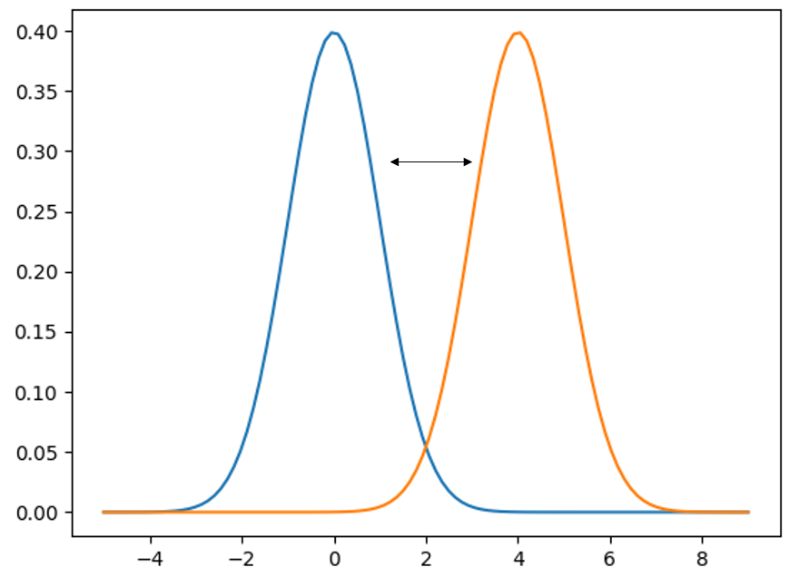
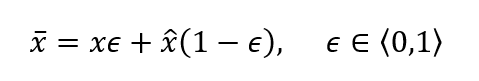
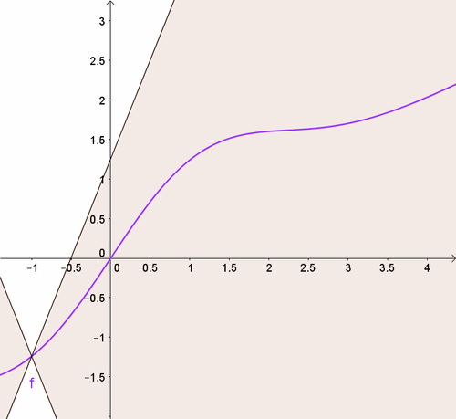

Better GANs — Gradient Penalisation
Introduction
As described in the Image Generation with GANs post, the main challenges with training simple GAN implementations — where the classification of real and generated samples is handled with binary cross entropy — stem from the propagation (or rather, lack thereof) of gradients once the critic becomes confident in its predictions. Recall that this was because of the activation function in the critic’s output layer.
It is therefore not surprising that some attempts at remedying this focus on altering the loss function. We will be using the so-called Wasserstein loss, also referred to as the Earth Mover’s Distance. The implementation of this modification is deceptively straightforward, but the specifics of why it works are subtle and took me some time to get my head around. The original paper is quite technical, and there is plenty of material online that simply repackages the original content, but I wasn’t able to find any specific material bridging the gap between a very shallow outline and the highly technical formulation. This post is an attempt at providing just that.
The Wasserstein loss
Intuitively, we would like the loss function to provide feedback to the generator even after the critic becomes proficient at separating the two distributions — so that the gradient does not vanish, and so that we don’t have to finely tune and babysit the model during training to ensure even convergence of the two components. We therefore want a function that is not bounded between zero and one: a more absolute measure of the distance between the fake and real image distributions.

One such function is the Earth Mover’s Distance. It’s a pretty terrible name, but the low-dimensional intuition is that, if you imagine a probability distribution as a pile of dirt, the EM distance is the least amount of effort required to shift one pile to the location and shape of the other. This amount of effort is proportional to both the distance and the area under the curve.
In technical parlance, this loss is also known as the Wasserstein L-1 loss:
\[W(P_r, P_g) = \sup_{\|f\|_L \leq 1} \left( \mathbb{E}_{x \sim P_r}[f(x)] - \mathbb{E}_{x \sim P_g}[f(x)] \right)\]
This means that the distance \(W\) between the two probability distributions (where \(r\) stands for real and \(g\) for generated) is the supremum of the difference of the expectation values of the function \(f\), when fed samples from either the real or the generated distribution.
The supremum means that the true Wasserstein distance must be calculated with a function \(f\) that yields the maximum possible value of the expression — there is an optimisation problem baked into the definition; you cannot just use any old function \(f\).
Moreover, the subscript under the supremum means that \(f\) has to be Lipschitz-1 continuous: at no point is the norm of the gradient of \(f\) allowed to be more than 1. In 1D this simply means the derivative of the function must be less than one. The intuition behind this is that a function with a gradient of one describes a Euclidean distance; a super-linear function (e.g. a quadratic) would ascribe disproportionately large cost to moving dirt over longer distances.
A critical observation: the function \(f\) in the Wasserstein loss is nothing other than the critic itself. The critic, as any neural network, is a function which we train to do a specific job — and in this case the job is to be the sort of function required by the Wasserstein loss definition. Clocking that \(f\) is synonymous with the critic, while now appearing obvious, took me a little while to realise and was a critical step in understanding the overall framework.
For the curious: the expression above is the dual version (obtained via Kantorovich–Rubinstein duality) of the original formulation:
\[W(P_r, P_g) = \inf_{\gamma \in \Pi(P_r, P_g)} \mathbb{E}_{(x,y) \sim \gamma}\left[\|x - y\|\right]\]
where the infimum is over all joint probabilities \(\gamma\) whose marginals recover \(P_r\) and \(P_g\) respectively — meaning all the ‘dirt’ from one pile must be mapped exactly onto the other. It just turns out that the two expressions are equivalent.
Ensuring the supremum condition
As is often the case in machine learning, instead of computing things analytically, we approximate. In practice, we provide the critic with a batch of real and fake samples, pass them through the critic, and take the difference of the batch means — we simply evaluate the expression we seek to maximise. Through backprop, this produces gradients which can be used to maximise the expression (note: maximising a value is the same as minimising its negative, so be careful with minus signs in your implementation!).
Does this produce the perfect, universally optimal function \(f\) required to satisfy the formal Wasserstein definition? Of course not. But it may be close enough. And if it isn’t, we produce another batch and repeat. How many repetitions are required is somewhat empirical — some early implementations used five rounds of gradient descent on the critic before proceeding to the generator.
Ensuring Lipschitz-1 continuity
For the L-1 continuity condition, it’s a similarly empirical story. Ensuring that \(f\)’s gradient is capped everywhere across the entirety of \(x\)-space is not tractable. We therefore soften our stance on both the cap and the localisation: we encourage (rather than ensure) a certain gradient magnitude, and we only do it where it matters most — in the segment of the space that separates the two distributions.
In practice, real and fake images are paired and blended into a combined image with weights summing to unity. This provides a sample residing somewhere on the line segment of the space connecting the two distributions. As the two distributions grow more similar, since the critic is incentivised to output large values for real samples and small values for fake samples, the gradients will be largest in the space between the distributions — precisely where the interpolated image resides.

After gradients are calculated, their norms can be computed and the deviations from unity used as a penalty score. There is, of course, a hyperparameter regulating how much influence this penalty term has. For clarity: the gradient penalty applies to the critic’s loss function, incorporated in the sub-iterations performed to ensure the supremum condition.

The generator
What we’ve achieved through the critic’s optimisation process is a measure of distance between the two probability distributions. What we haven’t done is minimise it — which is what’s required to generate realistic-looking samples.
We cannot do anything about the real distribution — it is completely static, defined by our input data. The way we modify our probability distribution is by modifying the generator — the generator is the probability distribution. Since we cannot shift the real distribution, we simply seek to maximise the critic’s score on the fake one: maximise the expectation value of the critic evaluated on samples from the fake distribution. In practice we minimise the negative value.
Note that as the two distributions grow more similar, the Wasserstein loss goes to zero. You may reasonably object that, as the generator evolves, the critic will no longer comply with the Wasserstein loss definition. This is correct — and that’s why, after each learning step taken by the generator, we have to re-optimise the critic.
Closing remarks
What also changes with the introduction of Wasserstein loss is the notion of the networks being adversarial. The generator still attempts to fool the critic, but whereas previously we had to carefully ensure the two models learn at a similar rate (because an overpowering critic causes vanishing gradients), we are no longer constrained in this way. The gradient signal from the critic — now continuous and proportional to the separation between the two distributions — will be coherent and helpful to the generator even if the critic easily distinguishes between them. In fact, it is not only helpful but actually required for the critic to be close to optimality in order to comply with the Wasserstein loss definition.
So the situation has shifted: we no longer have a genuine contest between the two networks; the situation is more akin to a master craftsman and an expert critic working in tandem to produce copies of the highest possible quality.
I think WGANs are a nice example of how the machine learning community makes use of mathematical formalism to guide intuition and develop effective algorithms. Digging deeper into the theoretical foundations was a really valuable exercise, and I hope you found it useful!
Results
Let’s put the new and improved GAN to a test and generate some handwritten digits.


Both have four convolutional layers — collapsing 28×28 to 1×1 for the critic, and upscaling from noise to 28×28 for the generator.
The two results differ by network size, with the same number of layers in both cases. The larger network converges much faster (despite a slightly lower learning rate, which was required for stability) and the resulting digits are significantly more realistic-looking. The smaller network never really settles — the digits keep morphing. The smaller model seems to struggle to create a well-separated mapping between noise vector components and network parameters that is robust under small perturbations. More artefacts are present, and some of the digits the generator outputs quite consistently are not digits at all — the network seems to have developed a fondness for the Greek letter tau!
References
- Martin Arjovsky, Soumith Chintala, Léon Bottou. Wasserstein GAN. arXiv 2017.